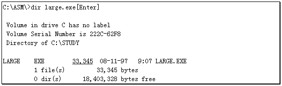
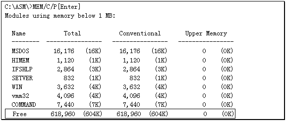

试想一个程序如果需要开辟一个32KB的大缓冲区用于处理磁盘文件，那么这个程序应该如何编写呢？按前面我们讨论过的内容，这个程序可以写成下面这样：
data segment
assume ds:data
msg db 'I have a large buffer- -32KB--ha! ha! ha!',0dh,0ah,07h,24h
buffer db 32768 dup (?) ；定义一个32KB的缓冲区
data ends
code segment
assume cs:code
main proc far
push ds ；初始化堆栈
xor ax,ax
push ax
mov ax,data ；初始化DS寄存器
mov ds,ax
lea dx,msg ；显示字符串MSG
mov ah,9
int 21h
ret ；结束进程
main endp
code ends
end main
程序看上去很简单，只是普通地用DB伪指令在数据段内开辟一个32KB的缓冲区。实际上这个程序编译连接成可执行文件后就会曝露出一个问题：

所谓的问题就是这个EXE文件好象有点太大了，竟然有30多KB，而源程序中的代码并不多，无非是显示一个字符串而已。这30多KB又从何而来呢？
如果去掉源程序中"BUFFER DB..."一行再进行编译连接，那么生成的EXE文件长度会迅速缩短到1KB多。实际上用DB伪指令开辟的缓冲区最终要包含在EXE文件里，每多"DB"一个字节，则最终的EXE文件就要增加一个字节。看来如果程序需要很大的缓冲区，采用传统的程序设计方法会显著增加可执行文件的长度。
如何解决这个问题？我们知道"操作系统"的一个重要特征就是可以对各种"资源"进行有效地管理。这里的"资源"指得是各种数据（文件）及系统安装的各类设备。毫无疑问内存也属于设备，它也应该受到操作系统很好地管理。
我们现在所依靠的操作系统--DOS就具备管理内存的能力。应用程序可以通过系统功能调用向DOS申请一些内存，结束之前还可以通过系统功能把"借"来的内存"还"给DOS，从而可以不用DB伪指令在数据段里定义缓冲区。
48H功能就是DOS提供的用于申请内存的功能调用：
功能号：48H
用 途：向DOS申请一定量连续内存空间
参 数：AH=48H
BX=申请内存的"节"数
调 用：INT 21H
返 回：如果成功，则CF清零，AX=申请到的内存块段地址
如果失败，则CF置1，AX=错误代码，BX=当前内存最大可用块的大小
AX=07H 内存控制块被破坏
08H 内存不够
一"节"内存包含16个连续的BYTE，但这16个BYTE的起始地址必须是16的整数倍。比如从0B800H:0000H处开始的16个BYTE可以看作是一节，而从0B800H:0001H处开始的16个字节就不是一节。
如果这个功能正确地执行了，则DOS将通过AX寄存器返回这块内存的段地址，偏移地址就是0。下面这个程序演示了这个功能的应用，它可以向DOS申请10KB连续内存块，然后在这10KB空间内填写一些信息并将其段地址显示在屏幕上：
data segment
assume ds:data
errmsg1 db 'MCB is error!!!',07h,0 dh,0ah,24h
errmsg2 db 'Not enought memory!!!' ,07h,0dh,0ah,24h
init db 'ABCDEFG--HIJKLMN'
data ends
code segment
assume cs:code
main proc far
push ds ；初始化堆栈
mov ax,0
push ax
mov ax,data ；初始化DS寄存器
mov ds,ax
；******第 一个插入 点******
mov ah,48h ；申请640节的内存
mov bx,640
int 21h
jc error ；若内存申请出错，转ERROR显示错误信息
call outseg ；输出申请到的内存段地址
mov es,ax ；ES:DI寄存器指向申请到的内存段
mov di,0
mov cx,640 ；准备向申请到的内存中填入数据
fill:
push cx ；暂存CX寄存器
mov cx,16 ；在内存中传送16个字节
mov si,offset init ；SI指向数据串
rep movsb ；传送数据串
pop cx ；恢复CX寄存器
loop fill ；填充下一"节"
；**** 第二个插 入点******
ret ；结束进程
error:
mov dx,offset errmsg1 ；准备输出第一个错误信息
cmp ax,07h ；是内存控制块出错吗？
jz exit ；是MCB有错，转EXIT显示第一个错误信息
mov dx,offset errmsg2 ；准备显示第二个错误信息
exit:
mov ah,09h ；显示DX寄存器指向的错误信息
int 21h
ret ；结束进程
main endp
outseg proc near ；输出段地址子程序
push ax ；保存寄存器
push bx
push cx
mov cx,4 ；显示一个4位十六进制数
loop1:
push cx ；暂存CX寄存器中的计数值
mov cl,4 ；准备处理4个Bit
rol ax,cl ；将高4位移至低4位
mov bx,ax ；暂存移位后的结果
and ax,000fh ；保留低4位
add al,90h ；将低4位转换成ASCII码
daa
adc al,40h
daa
mov ah,0eh ；利用10H中断的0EH功能输出字符
int 10h
mov ax,bx ；取回移位后的结果
pop cx ；恢复CX寄存器
loop loop1 ；继续处理下4位
pop cx ；恢复寄存器
pop bx
pop ax
ret ；返回主过程
outseg endp
code ends
；**** 第三个插 入点******
end main
程序中保留了一些"插入点"，用于增加代码。如果就这样直接运行这个程序，那么会得到一个十分令人迷惑不解的结果：这个程序显示一行错误信息--"Not enought memory（没有足够的内存）"。难道内存真的不够吗？

自由内存有618960个字节，600多KB内存竟然会不够，真让人摸不着头脑。
确实，600多KB的自由内存不应该不够，即使没有600多KB也不至于连10KB都没有。难道我们编写的程序有什么问题？